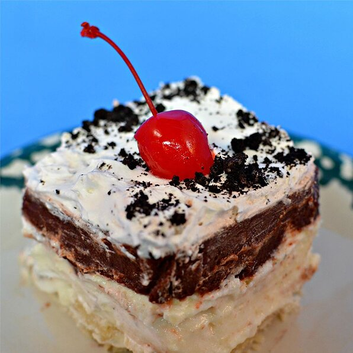

Pudding Breeze

Description
This dessert is always a hit at pot luck dinners and holiday gatherings. It is very easy to make. You can
substitute any
type of instant pudding for chocolate.
Ingredients:
- 1 ½ cups all-purpose flour
- ¾ cup margarine
- 2 (8 ounce) packages cream cheese
- 2 cups confectioners' sugar
- 3 cups frozen whipped topping (Cool Whip®), thawed
- 3 (3.9 ounce) packages instant chocolate pudding mix
- 5 cups whole milk
Steps:
- Preheat oven to 375 degrees F (190 degrees C).
- Crumble flour and margarine together. Blend well. Press mixture into the bottom of a 9x13 inch pan. Bake 15
minutes at
375 degrees F (190 degrees C) and let cool.
- In a mixing bowl, cream cream cheese and sugar together. Stir 2 cups whipped topping into the mixture; whip
together and
spread evenly over cooled crust.
- Mix the pudding mix with 5 cups milk (do not follow directions on box). Pour this mixture over the second
layer and top
with remainder of dairy whipped topping. Refrigerate and serve chilled.